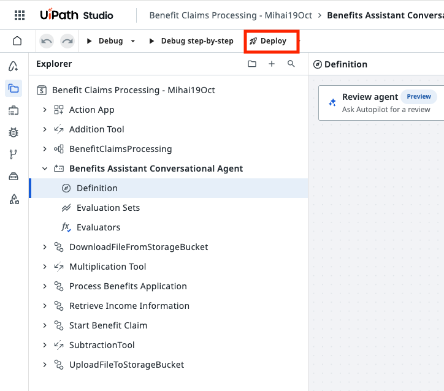
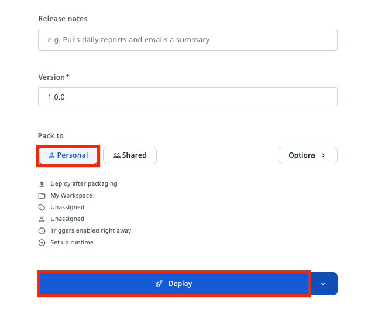
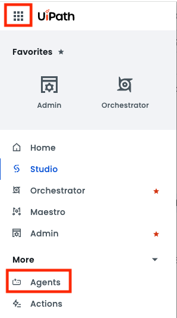
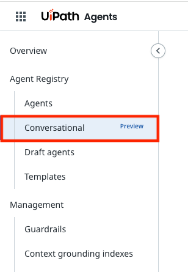
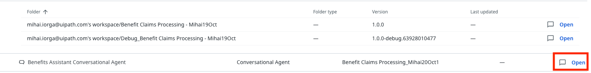
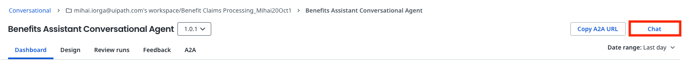
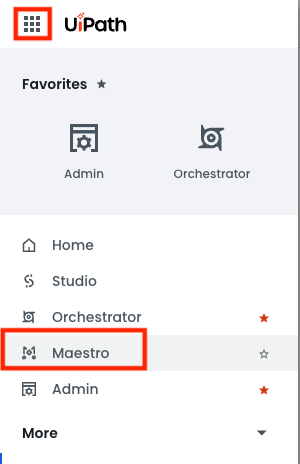
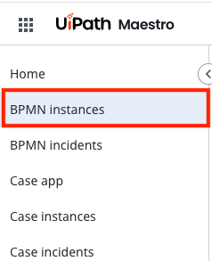
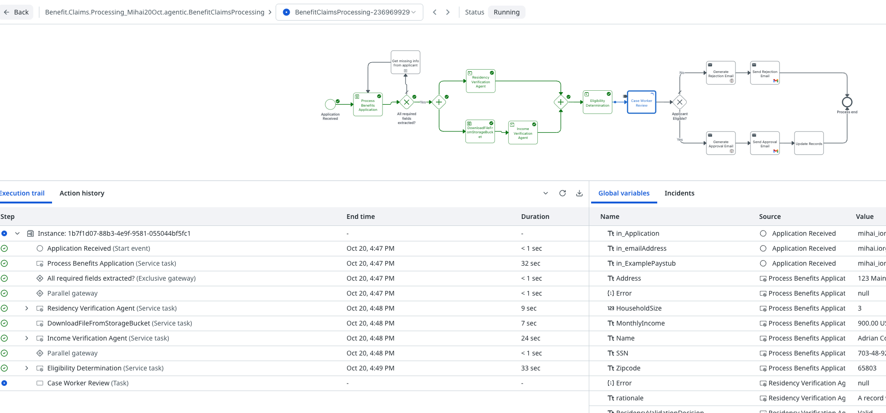

Publish the Solution¶
Here is our plan for this lesson:
- Deploy the Benefit Claims Processing solution from Studio Web to your personal workspace
- Run the process end to end
Goal¶
Until now, everything ran in Debug mode inside Studio Web. In this lesson you'll publish the Benefit Claims Processing solution and deploy it, so the process, the agents, the robots and the Action App run as a real automation in Orchestrator, outside the designer.
Publish vs. deploy¶
A UiPath Solution goes through three stages on its way to production:
| Stage | What happens | Where |
|---|---|---|
| Publish | Studio Web packs all the projects of the solution into one versioned solution package | Studio Web, then the tenant's Solutions list |
| Deploy | The package is installed into an Orchestrator folder. You choose the folder and map the resources (connections, storage buckets, indexes) | Orchestrator → Solutions |
| Activate | The deployed processes, agents and apps become available and can start running | Orchestrator → Solutions |
Each time you publish, you get a new version of the package. You can then upgrade an existing deployment to that version, instead of deploying from scratch.
Steps¶
1. Check the solution for errors¶
Studio Web only publishes a solution when all its projects are valid.
- Open your Benefit Claims Processing - <Your Name> solution in Studio Web.
- Check the Explorer and the Problems panel for errors or warnings in any project.
- Fix any errors before you continue.
2. Deploy the solution¶
-
In the Studio Web toolbar, click Deploy.

-
Choose the deployment destination Personal and click Deploy.
- Personal packs and deploys the solution into your own personal workspace. Only you can see and run it, which is all you need for this exercise.
- Shared publishes the package to a shared feed (the tenant feed or a folder feed) and deploys it into a shared Orchestrator folder, where other users with access to that folder can run it. It requires permissions to create solution folders and deployments in the tenant.

3. Run the process end to end¶
Now register a real application through the deployed Benefits Assistant Conversational Agent and follow it through the whole process.
-
In Automation Cloud, go to Agents → Conversational.


-
Find the Benefits Assistant Conversational Agent and click Open, then Chat.


-
Register a new application, the same way you did in lesson 10:
- type
I'd like to apply for SNAP benefits. - give your own email address, so you receive the final email
- attach Sample application.pdf when the agent asks for the application
- attach Sample pay stub.png when it asks for the paystub
- check the summary and answer
yes
- type
-
Wait until the agent confirms that the application was submitted.
-
Open Maestro and find the new BenefitClaimsProcessing instance. Follow it through the robot and the three agents, until it stops at the Case Worker Review task.



-
Open the Case Worker Review task in Action Center, review the agents' conclusions, and approve or reject the application.
- Check your inbox for the approval or rejection email.